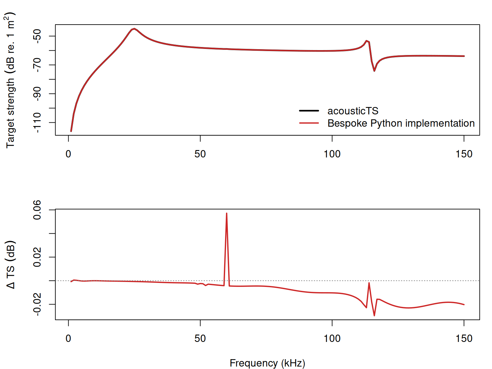

Viscous-elastic spherical scattering model
Source:vignettes/vesm/vesm-implementation.Rmd
vesm-implementation.RmdacousticTS implementation
These pages are motivated by layered gas-bearing fish scattering models and viscous resonance broadening (Khodabandeloo et al. 2021; Feuillade and Nero 1998).
The viscous-elastic spherical model is available through
target_strength(..., model = "vesms"). The implementation
is built on top of ESS objects so that the gas core and
elastic shell are stored in the same object framework already used by
the elastic-shelled sphere model. The additional viscous layer is then
supplied through model arguments at run time.
This page focuses on a single reproducible reference case that implemented the model presented by Khodabandeloo et al. (2021) in Python. The goal is not to restate that code line by line. It is to show how the same layered target is built in acousticTS, how the model is called, and how closely the resulting spectrum matches the original implementation over a broader frequency range.
VESMS is benchmarked here against a reference Python
implementation over a dense frequency sweep. That is strong
across-language validation for the documented spherical case, but it is
still narrower than the older modal-series families with long-standing
benchmark ladders. Moreover, both implementations were authored by the
same individual.
Building the reference object
The reference case uses:
- gas-core radius
R4 = 1.00 mm - shell outer radius
R3 = 1.02 mm - shell density
1040 kg m^-3 - gas density
80 kg m^-3 - gas sound speed
325 m s^-1 - shell shear modulus
0.2 MPa - shell bulk modulus implied by
lambda = 2.4 GPa - viscous-layer density
1040 kg m^-3 - viscous-layer sound speed
1510 m s^-1 - viscous-layer shear and bulk viscosity both set to
3 kg m^-1 s^-1 - surrounding seawater density
1027 kg m^-3 - surrounding seawater sound speed
1500 m s^-1
The shell and gas core are stored in an ESS object:
library(acousticTS)
radius_gas <- 1e-3
radius_shell <- radius_gas + 0.02e-3
shear_shell <- 0.2e6
lambda_shell <- 2.4e9
bulk_shell <- lambda_shell + 2 * shear_shell / 3
sphere_shape <- sphere(radius_body = radius_shell, n_segments = 80)
vesm_object <- ess_generate(
shape = sphere_shape,
radius_shell = radius_shell,
shell_thickness = radius_shell - radius_gas,
density_shell = 1040,
density_fluid = 80,
sound_speed_fluid = 325,
G = shear_shell,
K = bulk_shell
)Running the model
The original workflow retains the m = 0, 1, 2 terms. In
acousticTS, the corresponding setting is m_limit = 2. If no
outer viscous radius is supplied, VESMS estimates it from
the neutral-buoyancy relation described on the theory page.
frequency <- seq(1e3, 150e3, by = 1e3)
vesm_object <- target_strength(
object = vesm_object,
frequency = frequency,
model = "vesms",
sound_speed_sw = 1500,
density_sw = 1027,
sound_speed_viscous = 1510,
density_viscous = 1040,
shear_viscosity_viscous = 3,
bulk_viscosity_viscous = 3,
m_limit = 2
)
head(extract(vesm_object, "model")$VESMS)## frequency ka_viscous ka_shell ka_gas f_bs
## 1 1000 0.01757376 0.004272566 0.00418879 -7.891754e-07-1.372246e-06i
## 2 2000 0.03514751 0.008545132 0.00837758 -3.204580e-06+5.502200e-06i
## 3 3000 0.05272127 0.012817698 0.01256637 1.445418e-05+9.321618e-08i
## 4 4000 0.07029502 0.017090264 0.01675516 -1.279015e-05-2.264936e-05i
## 5 5000 0.08786878 0.021362830 0.02094395 -2.110379e-05+3.547666e-05i
## 6 6000 0.10544253 0.025635396 0.02513274 6.057932e-05+1.028612e-06i
## sigma_bs TS
## 1 2.505857e-12 -116.01044
## 2 4.054354e-11 -103.92078
## 3 2.089319e-10 -96.79995
## 4 6.765813e-10 -91.69680
## 5 1.703963e-09 -87.68540
## 6 3.670912e-09 -84.35226The stored output includes:
-
ka_viscous,ka_shell, andka_gas - the complex backscattering amplitude
f_bs - the linear backscattering cross-section
sigma_bs - target strength
TS
Validation outputs
Comparison to the original VESM implementation
For the implementation check below, the same reference geometry and material properties were run through:
acousticTS::VESMS- bespoke Python implementation
The comparison uses a shared 1-150 kHz grid with
1 kHz spacing and the same retained modal orders
(m = 0, 1, 2).
After regenerating the benchmark against the current compiled acousticTS implementation, the reference case gives:
- max abs. \Delta TS =
0.05598 dB - mean abs. \Delta TS =
0.00885 dB - frequency at max abs. \Delta =
60 kHz - elapsed time =
0.79 sfor acousticTS and0.98 sfor the Python implementation
| Comparison | N frequency | fmin (kHz) | fmax (kHz) | Max |Δ| TS (dB) | Mean |Δ| TS (dB) | f at max |Δ| TS (kHz) | acousticTS elapsed (s) | Python elapsed (s) |
|---|---|---|---|---|---|---|---|---|
| acousticTS vs original VESM | 150 | 1 | 150 | 0.0572 | 0.0089 | 60 | 0.05 | 1.0962 |
The largest mismatch on this grid remains well below
0.1 dB, and the mean absolute difference stays below
0.01 dB. That is strong agreement for a layered
modal-series model with complex viscous wave numbers and near-singular
higher-order solves at some frequencies.
Spectrum overlay

The upper panel shows that the two spectra are visually superposed
across the full comparison band. The lower panel makes the small
residual drift easier to see. In this case the largest difference occurs
near 60 kHz and reaches 0.05598 dB, which
remains small relative to the scale of the full spectrum.
A few explicit checkpoints
| Frequency (Hz) | acousticTS TS (dB) | Python TS (dB) | Δ TS (dB) | Abs. Δ TS (dB) | |
|---|---|---|---|---|---|
| 1 | 1000 | -116.01044 | -116.00966 | -0.00078 | 0.00078 |
| 38 | 38000 | -55.81067 | -55.80907 | -0.00160 | 0.00160 |
| 60 | 60000 | -58.93634 | -58.99354 | 0.05720 | 0.05720 |
| 120 | 120000 | -65.27321 | -65.25513 | -0.01807 | 0.01807 |
| 150 | 150000 | -63.89102 | -63.87077 | -0.02025 | 0.02025 |
Practical note on modal truncation
This comparison was run with m_limit = 2 because that is
the modal content retained by the original reference implementation used
here. For exploratory work at larger acoustic size, acousticTS can
retain more modes by increasing m_limit or by leaving it
unspecified so the model uses its default frequency-dependent
cutoff.
Closing note
The implementation check is useful because the viscous-elastic model is numerically more delicate than the simpler spherical modal-series models in the package. The agreement shown here reflects the current acousticTS implementation after the compiled VESMS backend and shared complex spherical-Bessel updates, and it indicates that the model is reproducing the intended layered-reference behavior across a meaningful frequency range rather than only at a few isolated checkpoints.